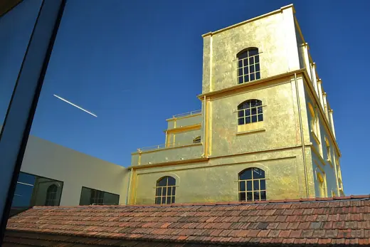
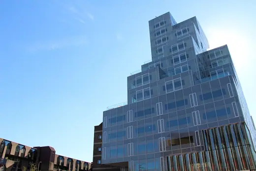

Adaptive reuse buildings 179
Sort
 Elbphilharmonie2017 · Hamburg
Elbphilharmonie2017 · Hamburg Reichstag1999 · Berlin
Reichstag1999 · Berlin Kolumba Museum2007 · Cologne
Kolumba Museum2007 · Cologne Quay Quarter Tower2022 · Sydney
Quay Quarter Tower2022 · Sydney GES-2 House of Culture2021 · Moscow
GES-2 House of Culture2021 · Moscow CaixaForum Madrid2008 · Madrid
CaixaForum Madrid2008 · Madrid Toni-Areal2014 · Zurich
Toni-Areal2014 · Zurich La Fábrica1975 · Sant Just Desvern
La Fábrica1975 · Sant Just Desvern Patan Museum1997 · Lalitpur
Patan Museum1997 · Lalitpur Argo Contemporary Art Museum2020 · Tehran
Argo Contemporary Art Museum2020 · Tehran Tate Modern2000 · London
Tate Modern2000 · London London Bridge Station2018 · London
London Bridge Station2018 · London Tai Kwun2018 · Hong Kong
Tai Kwun2018 · Hong Kong Gehry Residence1978 · Santa Monica
Gehry Residence1978 · Santa Monica Recoleta Cultural Center1980 · Buenos Aires
Recoleta Cultural Center1980 · Buenos Aires SESC Pompéia1986 · São Paulo
SESC Pompéia1986 · São Paulo Garage Museum of Contemporary Art2015 · Moscow
Garage Museum of Contemporary Art2015 · Moscow Art Gallery of Ontario2008 · Toronto
Art Gallery of Ontario2008 · Toronto Teatro Regio1973 · Turin
Teatro Regio1973 · Turin Faneuil Hall Marketplace (Quincy Market)1976 · Boston
Faneuil Hall Marketplace (Quincy Market)1976 · Boston Museum de Fundatie2013 · Zwolle
Museum de Fundatie2013 · Zwolle Cartagena Roman Theatre Museum2008 · Cartagena
Cartagena Roman Theatre Museum2008 · Cartagena Hedmark Museum1979 · Hamar
Hedmark Museum1979 · Hamar Castelvecchio Museum1975 · Verona
Castelvecchio Museum1975 · Verona Danish Maritime Museum2013 · Helsingor
Danish Maritime Museum2013 · Helsingor
Fondazione Prada2015 · Milan European Central Bank2014 · Frankfurt
European Central Bank2014 · Frankfurt Port House2016 · Antwerp
Port House2016 · Antwerp Military History Museum2011 · Dresden
Military History Museum2011 · Dresden Pousada Santa Maria do Bouro1997 · Amares
Pousada Santa Maria do Bouro1997 · Amares Baltic Centre for Contemporary Art2002 · Gateshead
Baltic Centre for Contemporary Art2002 · Gateshead Katyń Museum2015 · Warsaw
Katyń Museum2015 · Warsaw Zeitz MOCAA2017 · Cape Town
Zeitz MOCAA2017 · Cape Town CaixaForum Barcelona2002 · Barcelona
CaixaForum Barcelona2002 · Barcelona Tabakfabrik Linz1935 · Linz
Tabakfabrik Linz1935 · Linz The Lighthouse (Glasgow Herald Building)1895 · Glasgow
The Lighthouse (Glasgow Herald Building)1895 · Glasgow High Line2009 · New York
High Line2009 · New York Contemporary Jewish Museum2008 · San Francisco
Contemporary Jewish Museum2008 · San Francisco Pinacoteca do Estado de São Paulo1998 · São Paulo
Pinacoteca do Estado de São Paulo1998 · São Paulo
Timmerhuis2015 · Rotterdam Design Museum2016 · London
Design Museum2016 · London SESC 24 de Maio2017 · São Paulo
SESC 24 de Maio2017 · São Paulo Centro Cultural Gabriela Mistral2010 · Santiago
Centro Cultural Gabriela Mistral2010 · Santiago Amos Rex2018 · Helsinki
Amos Rex2018 · Helsinki Jim Thompson House1959 · Bangkok
Jim Thompson House1959 · Bangkok Museo Enzo Ferrari2012 · Modena
Museo Enzo Ferrari2012 · Modena Danish Jewish Museum2004 · Copenhagen
Danish Jewish Museum2004 · Copenhagen Battersea Power Station1955 · London
Battersea Power Station1955 · London